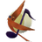
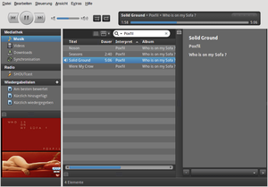
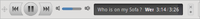

Nightingale
Dieser Artikel wurde für die folgenden Ubuntu-Versionen getestet:
Ubuntu 14.04 Trusty Tahr
Zum Verständnis dieses Artikels sind folgende Seiten hilfreich:

Nightingale  ist Media Player, Medienverwaltung und Browser in einem. Das Programm ist 2010 als Abspaltung von Songbird entstanden, als dessen Entwickler die Linux-Version von Songbird eingestellt hatten. Neben der Wiedergabe von lokal gespeicherten Medien bietet das Programm wie das Original die Möglichkeit, auf Internetseiten hinterlegte Inhalte abzuspielen. Zur Wiedergabe wird auf GStreamer gesetzt, um eine verbesserte Kompatibilität zu gewährleisten. Nightingale kommt daher mit den meisten Codecs klar.
ist Media Player, Medienverwaltung und Browser in einem. Das Programm ist 2010 als Abspaltung von Songbird entstanden, als dessen Entwickler die Linux-Version von Songbird eingestellt hatten. Neben der Wiedergabe von lokal gespeicherten Medien bietet das Programm wie das Original die Möglichkeit, auf Internetseiten hinterlegte Inhalte abzuspielen. Zur Wiedergabe wird auf GStreamer gesetzt, um eine verbesserte Kompatibilität zu gewährleisten. Nightingale kommt daher mit den meisten Codecs klar.
Basisfunktionen wie Wiedergabelisten, Coveranzeige, Bewertungssystem und das Bearbeiten von ID3-Tags werden ebenso unterstützt wie das Einbinden von Erweiterungen. Diese Add-ons gestatten es, das Programm mit erweiterten Funktionen, wie z. B. Audioscrobbler, YouTube-Videos, Musik-Blogs, Podcasts und Wikipedia, auszurüsten oder auch MP3-Player über Wiedergabelisten synchronisieren zu können.
Installation¶
Nightingale ist nicht in den offiziellen Paketquellen enthalten.
PPA¶
Das Nightingale-Team pflegt auf Launchpad zwei Paketquellen [1]. Normale Anwender sollten die stabile Version bevorzugen.
Adresszeile zum Hinzufügen des PPAs:
ppa:nightingaleteam/nightingale-release
Hinweis!
Zusätzliche Fremdquellen können das System gefährden.
Ein PPA unterstützt nicht zwangsläufig alle Ubuntu-Versionen. Weitere Informationen sind der  PPA-Beschreibung des Eigentümers/Teams nightingaleteam zu entnehmen.
PPA-Beschreibung des Eigentümers/Teams nightingaleteam zu entnehmen.
Damit Pakete aus dem PPA genutzt werden können, müssen die Paketquellen neu eingelesen werden.
Nach dem Aktualisieren der Paketquellen kann folgendes Paket installiert [2] werden:
nightingale (ppa)
 mit apturl
mit apturl
Paketliste zum Kopieren:
sudo apt-get install nightingale
sudo aptitude install nightingale
Für andere Desktop-Umgebungen als Unity (Standard bei Ubuntu) steht ein separates Paket zur Verfügung:
nightingale-nounity (ppa)
mit apturl
Paketliste zum Kopieren:
sudo apt-get install nightingale-nounity
sudo aptitude install nightingale-nounity
Speziell an Entwickler richtet sich ein weiteres, aber experimentelles PPA .
Manuell¶
Über die Homepage  kann ein vorkompiliertes Binärarchiv für Linux bezogen werden (ca. 40 MiB). Für Nutzer von Unity und GNOME 3 steht wiederum eine spezielle Version zur Verfügung. Die Archivdatei muss nur entpackt [3] werden und steht anschließend sofort zur Verfügung.
kann ein vorkompiliertes Binärarchiv für Linux bezogen werden (ca. 40 MiB). Für Nutzer von Unity und GNOME 3 steht wiederum eine spezielle Version zur Verfügung. Die Archivdatei muss nur entpackt [3] werden und steht anschließend sofort zur Verfügung.
Hinweis!
Fremdsoftware kann das System gefährden.
Das Programm wird dann mit dem Befehl
nightingale
im entpackten Ordner gestartet [4]. Um das Programm bequemer aufrufen zu können, kann ein Programmstarter erstellt werden. Für eine systemweite Nutzung bietet es sich an, den beim Entpacken entstandenen Ordner Nightingale mit Root-Rechten [5] nach /opt zu verschieben.
Bedienung¶
|  |
| Nightingale im Standard-Federkleid |
Einstellungen beim ersten Aufruf¶
Nach der Bestätigung der Lizenz, der Angabe des Pfades, in dem die lokalen Medien liegen, und der Auswahl der gewünschten Erweiterungen werden diese installiert und die lokale Bibliothek importiert. Je nach System und Datenmenge kann dieser Vorgang eine Weile dauern. Die Funktionen erschließen sich in der Regel von selbst, da alles logisch und übersichtlich zu erreichen ist. Über die rechte Maustaste  können zusätzliche Funktionen des Programms erreicht werden.
können zusätzliche Funktionen des Programms erreicht werden.
Einstellungen¶
Unter "Bearbeiten -> Einstellungen" findet man die Rubriken "Allgemein", "Tabs", "Webinhalte", "Wiedergabe", "Datenschutz", "Sicherheit", "Erweitert", usw. Wer die Einstellungen von Firefox kennt, wird sich wie zu Hause fühlen.
Sprache¶
Über "Datei -> Sprache" bzw. "File -> Language" kann die Spracheinstellung verändert werden. Nightingale lädt das entsprechende Sprachpaket herunter, welches nach einem Neustart des Programms zur Verfügung steht.
Designs¶
Um das Aussehen des Players zu ändern, wählt man unter "Ansicht -> Alle Federkleider" das gewünschte Design aus. Um zusätzliche Skins zu nutzen: "Ansicht -> Alle Federkleider -> Weitere herunterladen" anwählen. Hier kann man das gewünschte Skin durch Anwählen von "Install" auswählen und herunterladen.

Miniplayer¶
Der Miniplayer wird durch "Ansicht -> Mini-Modus" aktiviert. Über einen Rechtsklick oder das Pluszeichen rechts kann die Ansicht wieder auf den "Standardmodus" umgestellt werden.
Bedienelemente¶
Mit "Ansicht -> Bedienelemente" kann man die Bedienelemente "Oben" oder "Unten" anzeigen lassen.
Medienansichten¶
In "Ansicht -> Medienansichten" kann man zwischen "Filteransicht" oder "Einfache Listenansicht" wählen.
Tastenkürzel¶
Je nach Verwendungszweck bietet das Programm eine Fülle vorgegebener Kürzel. Einige interessante Tastenkürzel sind:
| Nightingale | |
| Taste(n) | Funktion |
| Strg + U | Adresse öffnen |
| Strg + O | Datei öffnen |
| Wiedergabe Start/Stop | |
| Strg + ← | Vorheriger Titel |
| Strg + → | Nächster Titel |
| Strg + ⇧ + U | Medien importieren |
| Strg + T | Neuen Reiter öffnen |
| Strg + I | Metadaten-Editor |
Albumcover¶
Die Album-Artwork-Funktion unterstützt Drag & Drop von Bildern sowie Umschalten zwischen Wiedergabe und aktuell ausgewählten Tracks.
Metadaten¶
Um ID3-Tags von MP3-Dateien zu bearbeiten, führt man einen Rechtsklick auf den oder die ausgewählten Track(s) aus und wählt "Metadaten anzeigen". Für größere Datenmengen empfiehlt sich die Verwendung von spezialisierten Programmen.
Erweiterungen¶
Alle Erweiterungen findet man auf einer eigenen Webseite Nightingale-Addons oder unter "Extras -> Add-Ons". Hier können bereits installierte Plugins konfiguriert oder gelöscht werden. Einige konfigurierbare Erweiterungen wie z.B. SHOUTcast legen eigene Kategorien an. Erweiterungen können per Drag & Drop, mitunter auch direkt über die entsprechende Internetseite, installiert werden. Man erreicht diese schnell über "Extras -> Add-Ons -> Erweiterungen herunterladen". Sofern eine Erweiterung inkompatibel ist, wird sie im integrierten Web-Browser entsprechend gekennzeichnet.
Es gibt eine ständig wachsende Anzahl von Erweiterungen, die alle Bereiche des Programms betreffen. Die hier vorgestellten Erweiterungen sind teilweise Bestandteil der Basisinstallation.
mashTape¶
mashTape zeigt zum Interpreten passende Flickr-Fotos , Smugmug-Fotos , YouTube-Videos , Last.fm-Biografien  , Yahoo News , MTV Music News , Wikipedia, MTV Music Videos , oder Google News an - je nach Auswahl.
, Yahoo News , MTV Music News , Wikipedia, MTV Music Videos , oder Google News an - je nach Auswahl.
MediaFlow¶
Um die Erweiterung MediaFlow " zu nutzen, benötigt Nightingale ein funktionierendes Java-Plugin für Mozilla. Über "Ansicht -> Medienansichten -> MediaFlow" wird die Ansicht aktiviert.
Internetradio¶
SHOUTcast Radio ist ein Streaming-Verzeichnis für diverse Audio- und Videostreams. Betrieben wird es von der Firma Nullsoft , die inzwischen zu AOL gehört. Im Verzeichnis findet man Tausende von Internetradio-Sendern sortiert nach Genre und Bitrate. Eine kleine Auswahl "normaler" Radiosender findet sich auch im Artikel Internetradio/Stationen.
Möchte man Radiostreams abseits von SHOUTcast hören, kann man entweder das Add-On BirdTune benutzen, das bis jetzt allerdings noch nicht das Hinzufügen eigener Stream-Adressen erlaubt, oder man geht den Weg über eine Playlist-Datei. Das funktioniert allerdings nicht mit Streams, die selbst eine Playlist sind. Dazu schreibt man die Stream-Adressen einfach Zeile für Zeile in eine Datei und öffnet diese in Nightingale über "Datei -> Wiedergabeliste" importieren. Songbird erkennt es automatisch als M3U-Playlist und legt sie in der linken Leiste ab.
Man beachte aber, dass das Pausieren der Wiedergabe eines Streams nicht verhindert, dass er weiterhin heruntergeladen wird. Möchte man also keinen unnötigen Traffic verursachen, sollte man das Abspielen mittels Rechtsklick auf den Pause-Knopf -> "Anhalten" beenden.
Problembehebung¶
Manchmal kann es zur Problembehebung sinnvoll sein, Nightingale auf die Werkseinstellung zurückzusetzen:
Das Programm beenden
Den Ordner ~/.nightingale im Homeverzeichnis löschen und
Nightingale neu starten.
Dann mit den Einstellungen beim ersten Aufruf fortfahren. Wenn das Programm deinstalliert wurde, kann man diesen Ordner ebenfalls löschen.
Links¶
Nightingale und Nightingale - Wikipedia
AudioPlayer
 Übersichtsartikel
ÜbersichtsartikelVideoPlayer
Übersichtsartikel
- Erstellt mit Inyoka
-
 2004 – 2017 ubuntuusers.de • Einige Rechte vorbehalten
2004 – 2017 ubuntuusers.de • Einige Rechte vorbehalten
Lizenz • Kontakt • Datenschutz • Impressum • Serverstatus -
Serverhousing gespendet von